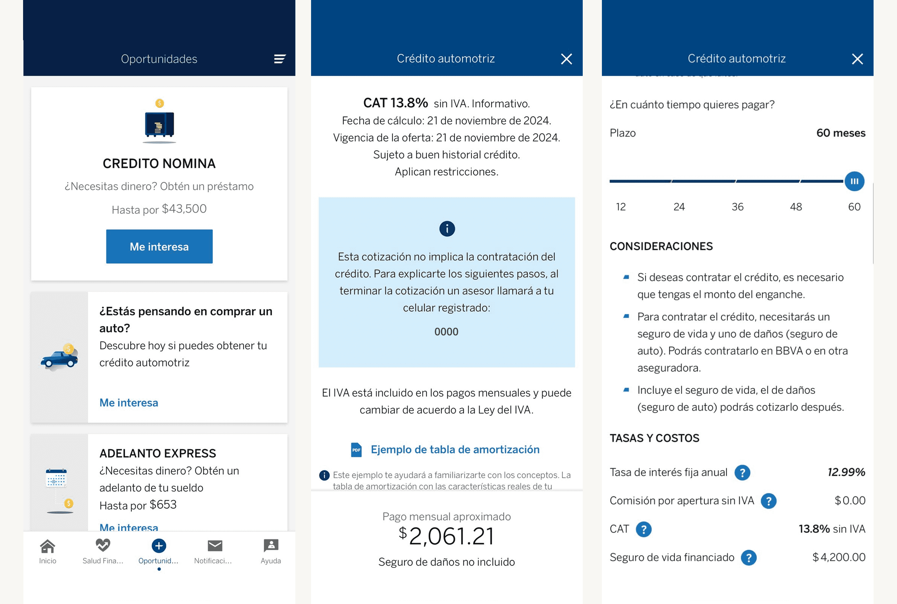
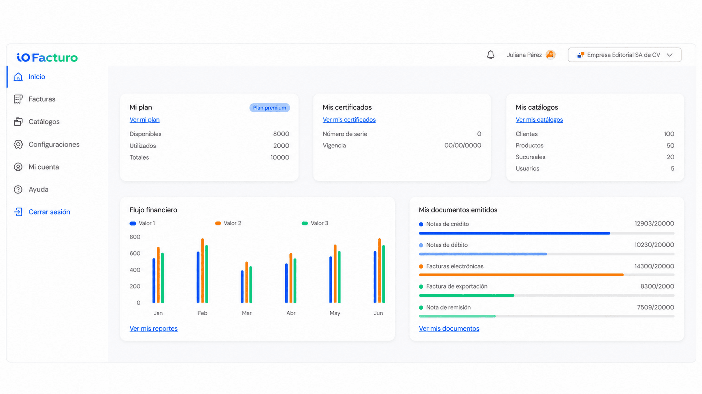
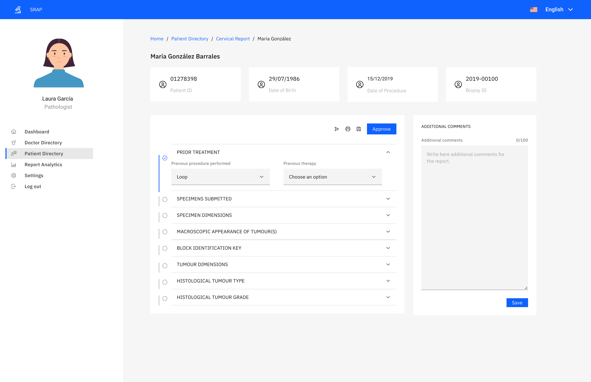
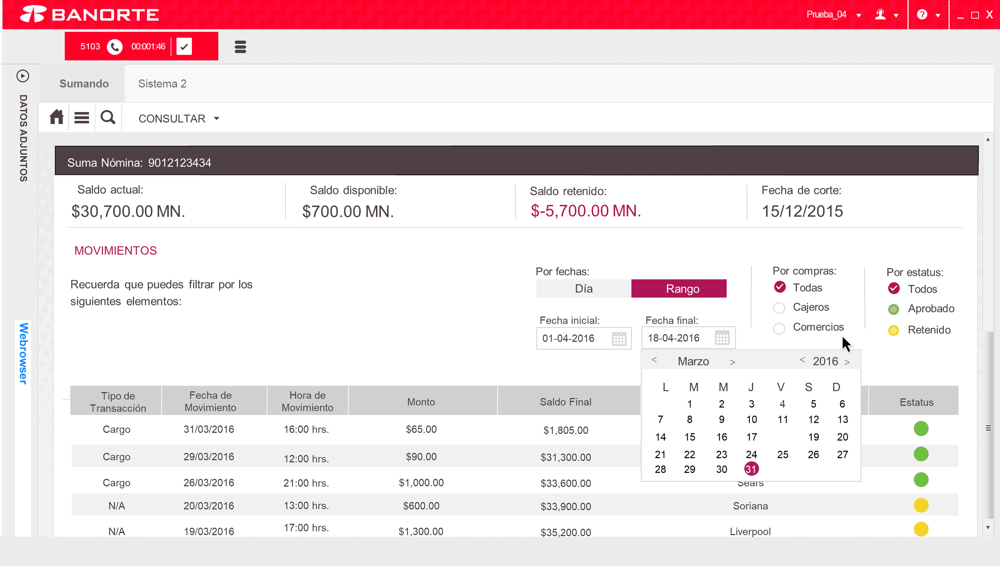
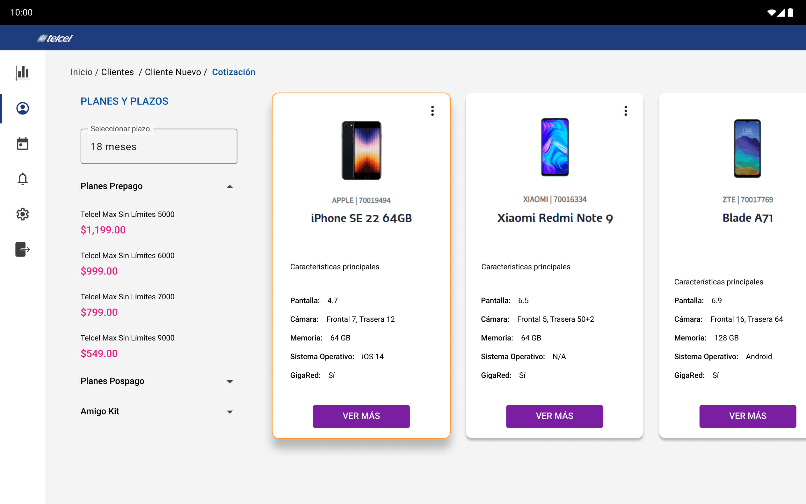

04 - BBVAFinancial services, Insurance
Integrating auto insurance into mobile banking.
Designing a clearer path from quote to coverage within an existing financial ecosystem.
I turn complex systems, emerging technologies, and unfamiliar domains into experiences people can understand and use. Product design, research, and strategy across fintech, healthcare, insurance, telecommunications, and enterprise products.
Three projects that show how I approach complexity at the product, interaction, and system levels.

Transforming fragmented country-specific invoicing experiences into a more cohesive product with shared foundations and room to scale across Latin America.

Exploring how conversational UX and IBM Watson could simplify selected banking interactions while creating a foundation for a future AI-powered experience.

A proof of concept exploring how a highly manual cancer reporting workflow could become a more structured, standardized, and scalable digital experience.
Experience index
My work spans products where understanding the domain, the workflow, and the constraints is as important as designing the interface.

Designing a clearer path from quote to coverage within an existing financial ecosystem.

A responsive internal portal designed to shorten onboarding and give executives quick access to training, resources, and performance tools in a high-turnover environment.

Exploring how customer service teams could adopt paperless processes without adding friction to daily operations.
About
My work spans fintech, healthcare, insurance, telecommunications, and enterprise products. I’m most useful when the domain is unfamiliar, the workflow is complex, and the team needs a clearer way forward.
I work across product design, research, and strategy, collaborating with Product, Engineering, and business teams to translate requirements and insights into experiences that can evolve.
More about meContact
I’m interested in thoughtful product challenges where research, systems thinking, and close collaboration can turn complexity into a clearer experience.
lumaro3163@gmail.com